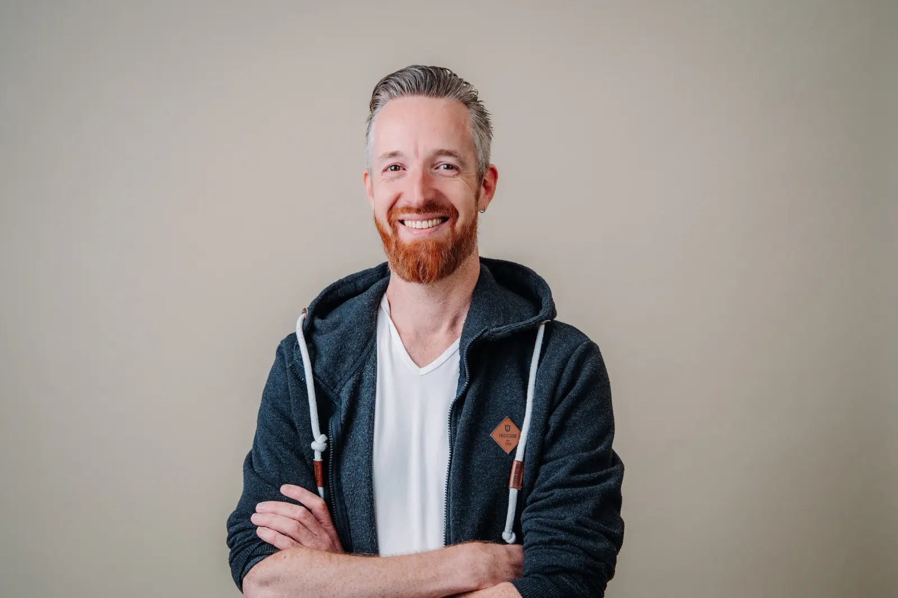
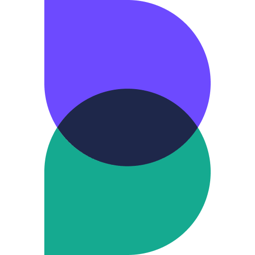
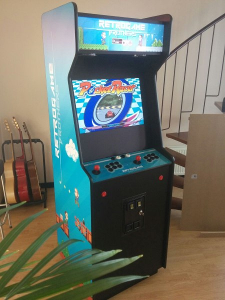
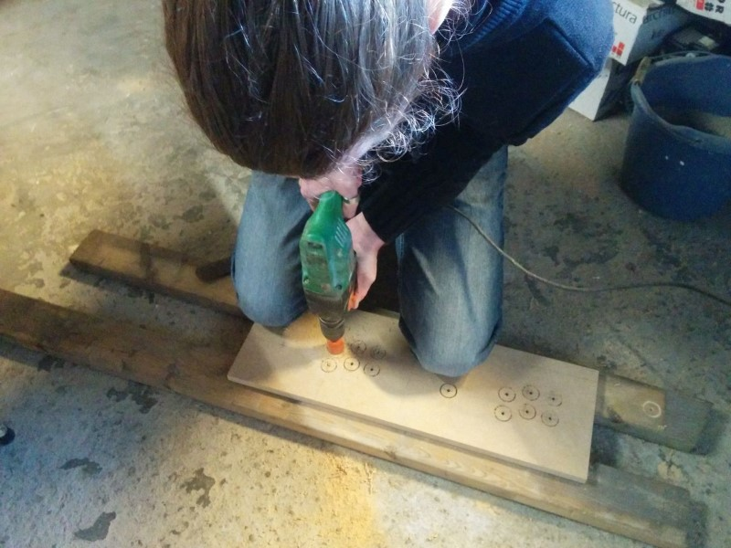
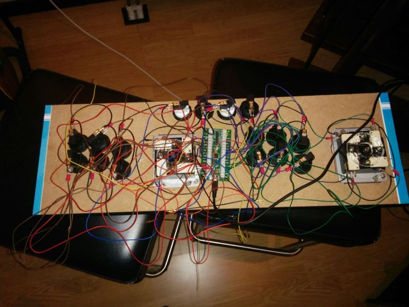

FTE team built from the ground up across product, engineering and data.
Engineering · Product · AI · Data
Turning technology
into a growth engine.
I build scalable platforms, teams and operating models that turn complex technology into lasting customer and business value.
Explore my work ↓
Chief Product & Technology Officer
Experience - My Work
01BridgeFund · 2023/2026 · 4 years
Building the technical foundation for a scalable FinTech
from the Ground Up.
Scaling the tech in a fintech company comes with decisions, challenges and lessons you can only fully appreciate when you experience them. In these chapters, I share what I learned at BridgeFund, with practical examples, tips and insights from building the teams, technology and processes to support growth. I hope this story helps you understand what to expect, ask useful questions and make informed decisions as you scale your own technical foundation. I also hope it serves as a practical guide for other CPTOs navigating similar challenges in their own organisations.
2023Year One: Building the Foundation
When I joined BridgeFund in January 2023, I found a relatively small company driven by marketing, with around 25 employees and big ambitions. Technology was essential to the business, but responsibility for it was spread across several external suppliers.
Around 20 engineers in Sri Lanka handled software development. A supplier in the Netherlands managed IT infrastructure. Another external team with experience in data solutions worked on Databricks, dashboards and data insights. A local web agency maintained the customer onboarding flow. The loan management system had been written by the former CTO, largely by himself and without documentation. The existing CRM lacked the functionality and flexibility the business needed.
We were experiencing three to four critical outages a day, during which we could not serve customers. There was little monitoring and very little visibility into what was going wrong. Before we could think about growth, we had to make sure we could reliably serve the customers we already had.
“Buy what enables you, build what differentiates you.”
1. Earn the Right to Scale
One of my first steps was to visit the engineering team in Sri Lanka. I needed to meet the people, understand how they worked and find out what was behind the recurring problems. They already had a roadmap of roughly 40 to 50 new features for the year, alongside plans to launch mobile apps. Meanwhile, the existing platform needed constant firefighting.
I halted the entire roadmap. For me, it made no sense to add more features when we couldn’t reliably run what we already had. Every new feature would introduce more complexity into a foundation we didn’t yet understand or control.
For the three weeks I spent in Sri Lanka, the entire team focused on implementing monitoring, logging and observability across our services. Until then, engineers were responding to individual outages and bugs without a clear picture of the underlying causes. They could get a service running again, but often couldn’t explain why it had failed or prevent it from happening again.
Once we could see what was happening, we could direct our effort towards the root causes. Over the following three to six months, that work brought the platform under control. Monitoring didn’t fix the systems by itself. It gave us the information we needed to decide what to fix.
Further reading
Free book chapterMonitoring Distributed Systems from Google’s Site Reliability Engineering.
Explains how monitoring can reveal customer impact and help distinguish symptoms from causes. A useful starting point when deciding what your team actually needs to observe.
2. Build a Team That Owns the Outcome
The visit to Sri Lanka also changed my understanding of our delivery model. The engineers were building what they had been asked to build. But testing, monitoring and observability hadn’t been established as clear expectations. Neither had questioning a proposed solution or suggesting a better approach. There were differences in working culture and expectations that we hadn’t sufficiently accounted for. The way work was briefed said a lot about the results we were getting.
For BridgeFund’s next stage, I wanted engineers close to our customers, colleagues and internal stakeholders. People who understood what we were trying to achieve, questioned requests that didn’t make sense and came back with better ideas. That shaped the decision to build our local engineering team in the Netherlands. We allowed six months to recruit and transfer knowledge. During that period, the local team worked alongside the engineers in Sri Lanka. By the end of the first year, we had around ten engineers in the Netherlands and had phased out the offshore team.
We took a similar approach to other capabilities. We hired an IT service desk colleague to take responsibility for employee devices and a DevOps engineer to manage our AWS platform and Kubernetes cluster. That enabled us to phase out the external infrastructure supplier. We brought in data engineers and data scientists to take ownership of Databricks and our data capabilities.
We also hired frontend developers and a product manager to bring the onboarding flow under our own management. The customer journey was one of the areas where we believed we could differentiate, so we wanted the people developing it close to the business. The objective was to establish internal responsibility for the capabilities we depended on. Ending supplier relationships followed from having the people and knowledge to take that responsibility ourselves.
Further reading
BookTeam Topologies by Matthew Skelton and Manuel Pais.
Explores team responsibilities, interactions and the amount of complexity a team can handle. Useful background when deciding how to organise ownership as your engineering team grows.
3. Transfer the Ability to Solve Problems
Hiring the team didn’t automatically make it safe to step away from our suppliers. The knowledge still had to move. You never know with complete certainty whether everything relevant has been transferred. We used three practices to make that uncertainty manageable.
First, we introduced Backstage to document our services and API endpoints. We needed knowledge to be accessible to the internal team rather than remain in individual people’s heads.
Second, whenever a bug or incident arose, someone from the local engineering team in the Netherlands had to participate in resolving it. I didn’t want an external supplier fixing something on their own and simply informing us afterwards. Working through a real problem reveals details that documentation often misses. You discover dependencies, assumptions and the reasons behind earlier decisions. Those moments became an important part of the handover.
Third, I asked team members every week how confident they felt about taking ownership. My working threshold was that everyone should reach around seven out of ten. That wasn’t a scientific measure. It was a practical way to discuss uncertainty and avoid basing the decision only on the confidence of the most experienced engineer. Together, documentation, participation and those weekly conversations gave me enough confidence to complete the transition.
Further reading
BookThe Programmer’s Brain by Felienne Hermans.
Explores how programmers learn and understand code. Useful background for transferring knowledge when a new team takes ownership of an unfamiliar system.
4. Buy What Enables You. Build What Differentiates You.
As we gained control over the platform, we could address a more fundamental question: why were we building so much of it ourselves? We were maintaining a loan management system, extending a limited CRM and developing the services around them. That consumed engineering capacity and made change difficult.
I wanted us to be explicit about where our own technology could give BridgeFund an advantage. Providing loans and credit lines was our core business. But writing our own loan management software wasn’t necessarily what would make us a better lender.
That distinction led to two major decisions: adopting Mambu as our core banking platform and HubSpot as our main CRM. These were capabilities we needed to operate. We could buy proven software for them and focus our own development effort on the areas where we believed we could make a difference.
The first was customer experience. That included our marketing website and onboarding flow, as well as our ambition for a My BridgeFund environment where customers could manage their loans or credit lines. The second was credit decisioning. If we could use data to understand creditworthiness better, that could become a meaningful competitive advantage.
By the end of the first year, we had made those decisions and started planning the implementations. We were still running the legacy systems. The migrations would be substantial pieces of work, with consequences far beyond technology.
Further reading
ArticleChoose Boring Technology by Dan McKinley.
Discusses the limited capacity organisations have for unfamiliar technology. It offers another way to think about where custom solutions and additional complexity are worth the effort.
5. Establish Ownership of Your Data
Our ambition to improve credit decisioning required an internal data capability. We hired data engineers and data scientists, brought Databricks under their ownership and started addressing the quality of the data available to us.
Our direction was to use PSD2 transaction data to assess a potential customer’s creditworthiness. We wanted to understand what that data could tell us, rather than depend on collecting financial statements and asking customers to explain their business through conversations. That gave us a clear reason to develop our own machine learning models. But it also made the quality of the underlying data essential.
You cannot expect reliable decisions from unreliable inputs. Before getting carried away with what AI might do, we needed people who understood the data and could take responsibility for it. This was the beginning of that work. The detailed preparation for our migrations in year two would expose how much cleaning, deduplication and standardisation was still needed.
Further reading
BookFundamentals of Data Engineering by Joe Reis and Matt Housley.
Covers the data lifecycle from its sources through to its consumers. Useful context for understanding why data engineering involves ownership and business requirements as well as tools.
6. Take Ownership Before Deciding What to Rebuild
Bringing onboarding in-house gave us responsibility for a part of the business that directly affected customers. It also meant inheriting a substantial legacy PHP application. Taking ownership didn’t immediately remove its limitations. It put us in a position to understand the application, maintain it and make informed decisions about its future.
PHP itself wasn’t the issue. What mattered was whether we had the people, knowledge and technical foundation to develop the experience we wanted. As the platform became stable, we could introduce product capability and spend more time on those questions. We were beginning to move beyond responding to failures and towards deliberately improving the customer journey. The decisions about how to modernise onboarding would follow in year two.
Further reading
BookWorking Effectively with Legacy Code by Michael Feathers.
Offers techniques for understanding and changing existing code, including working with tests and dependencies. A practical companion when a team inherits an application it did not build.
Where We Stood at the End of Year One
We had brought the platform under control and established internal capabilities across engineering, infrastructure, data and product. The local engineering team in the Netherlands had taken over from the offshore team. Other internal colleagues had taken responsibility for capabilities previously managed by external suppliers.
We had chosen Mambu and HubSpot, but we hadn’t completed the transition. The legacy systems were still there, and substantial migration work lay ahead. What had changed was our ability to take responsibility for that work. We had a clearer understanding of the systems, a team that could own them and a direction for where we wanted to invest. Four principles shaped that first year:
- Buy what enables you, build what differentiates you.
- Make sure core capabilities are in-house.
- Sanitise your data from the start.
- Culture eats strategy for breakfast.
That last principle ran through all the others. Our plans depended on people being willing to question requests, investigate problems, share knowledge and take responsibility.
2024Year Two: Simplifying the Business and Preparing for Growth
By the second year, BridgeFund had grown to around 50 people. We had made the major platform decisions, but were still operating the old systems while planning how to replace them. Mambu and HubSpot would affect almost every part of the organisation.
At the same time, the business had accumulated a lot of operational complexity. Spreadsheets moved between departments. Information was copied across systems. Product variations and exceptions created additional work. Different data sources sometimes gave conflicting answers. We had an opportunity to do more than migrate software. We could reconsider how the business operated.
“Buying a standard platform only removes complexity if you are willing to reconsider some of your existing ways of working.”
1. Make It a Business Transformation
From my first day, there was a lot of frustration with IT. Whenever something went wrong or took too long, technology was usually seen as the cause. With the outages we had experienced, some of that frustration was justified. But as we looked more closely, we also found problems in the way the business operated. Information moved between spreadsheets. Departments repeated work. Manual mistakes carried through into other systems.
The rest of the management team experienced those problems every day. Getting support for change was therefore easier than you might expect. People wanted simpler processes and faster ways of working. That gave us a shared starting point. I worked closely with the COO to review our operations. We needed to understand how information moved, who was responsible for each step and where unnecessary complexity had accumulated.
Just because a CRM or banking platform is a technical application doesn’t mean its implementation belongs to technology alone. The whole business would be affected, so the business had to participate in deciding how it should work.
Something to listen to
PodcastProduct management theater with Marty Cagan on Lenny’s Podcast.
For a broader discussion of organisational change, listen to the section on the product operating model, beginning around 1:02:05. It connects product work with the responsibilities of the wider organisation.
2. Simplify Before You Implement
Our processes had become more complicated as the business grew. We were introducing propositions, extending loans and credit lines, working with different discounts and handling exceptions. Each variation added something for people and systems to manage. I didn’t want us to reproduce all of that complexity inside the new platforms.
We brought in external expertise to help implement HubSpot and review our processes. My starting point was that many of our operational requirements were common business requirements. We didn’t need a unique implementation for everything. Where established practices in HubSpot could support us, I preferred to adapt our way of working and use the platform as standard. Customising software around an inefficient process would preserve the inefficiency and give us more software to maintain.
We applied the same thinking to Mambu. We reviewed the variations in our loans and credit lines and made decisions to narrow and standardise our propositions. Keeping things simple became an important principle. Before implementing the workflows, we mapped the processes and agreed how we wanted them to operate.
Further reading
BookLearning to See by Mike Rother and John Shook.
Introduces mapping the current process and designing an improved future process. Its examples come from manufacturing, but the distinction is useful when reviewing service operations before implementation.
3. Follow the Application Through the Entire Business
Customer onboarding showed how much complexity had built up. An application first went to sales for a manual check. Depending on the outcome, customer service would call the applicant to understand why they needed funding and what they intended to use it for. Those notes went into a separate spreadsheet and back to sales before reaching the risk team.
Risk then reviewed the story alongside the PSD2 transaction data. Sometimes that meant another call to the customer, more information and another review. Along the way, people updated several spreadsheets. Some were used for reporting, while others prepared information for the next step.
Even after the credit decision, there was considerable manual work. KYC information had to be collected. A contract was drafted by hand and sent for signatures from both sides. Administration then registered the loan in the loan management system, followed by communication to the customer.
Each individual activity had a purpose. But following the application through the whole business revealed how often information was transferred, copied and handled again. We needed to understand that complete journey before deciding where to intervene.
Further reading
BookThe Phoenix Project by Gene Kim, Kevin Behr and George Spafford.
A novel about IT, DevOps and improving the flow of work across a business. A useful companion to this chapter’s focus on handovers and bottlenecks, and why improving one department alone does not necessarily improve the whole process.
4. Put a Chess Clock on the Process
We couldn’t automate everything at once. We needed to understand where to start and how HubSpot could help. We used what I would describe as a chess clock to measure the waiting time between steps. We counted the handovers between people and departments and looked at where errors kept happening. We were measuring how long an application sat waiting for the next action. That helped us see where the process was getting stuck.
Those findings gave us a practical way to set priorities. We looked for changes that could make the biggest difference for customers and for the business. Which handovers introduced long waits? Where did information get copied or lost? Which activities repeatedly needed correcting?
We then identified where we could simplify the work and introduce automation. This gave us a manageable sequence of improvements. We didn’t need to automate every step before making progress.
Further reading
BookThe Goal: A Process of Ongoing Improvement by Eliyahu M. Goldratt and Jeff Cox.
A business novel about finding the bottleneck that limits the whole system. Its focus on constraints and flow complements the chess clock exercise: identify where work gets stuck before deciding what to improve or automate.
5. Clean the Data Before Moving It
Preparing for the migrations exposed how inconsistent our data had become. We had duplicate information, different formats and data spread across domains and systems. Moving it required work on both the records themselves and the models used to organise them. We invested time in sanitising, deduplicating and standardising that information.
This also mattered beyond the migrations. We were still making too many strategic decisions on instinct because the data wasn’t dependable enough. Different data points could contradict one another, making it difficult to know which answer to trust. Moving inconsistent data into a new platform wouldn’t resolve those contradictions. We had to address them as part of the preparation. The internal data capabilities we had established in year one were essential to doing that work.
Further reading
BookGetting in Front on Data by Thomas C. Redman.
Focuses on the people and organisational responsibilities behind data quality. A useful companion to cleaning migration data and preventing the same problems from recurring.
6. Prepare in Parallel, Launch in Stages
Both Mambu and HubSpot represented substantial changes. We had one team working on each implementation, and preparation ran in parallel. We deliberately kept the actual migrations separate. Each platform affected enough of the organisation on its own. Launching both together would have introduced too much change at once.
Mambu came first. Within that implementation, we started with funding, the smaller part of the business. It represented roughly 10 to 20 percent of our processes and business. Once that was live and working, we moved into the lending phase.
The implementation and migration work stretched across the year. Mambu first went live around the summer, with HubSpot following around October or November. Those launches were milestones in a longer programme. They weren’t the point at which every process became fully automated. Some steps remained manual after launch. We continued improving them, gradually introducing more automation as we worked through the priorities. As the platforms took over functions previously handled by our own systems, we were also able to remove around 80 percent of the old codebase, much of which represented legacy complexity and technical debt.
Further reading
BookContinuous Delivery by Jez Humble and David Farley.
Covers practices for making software releases more reliable. Useful technical background for preparing major changes and reducing deployment risk, alongside business readiness.
7. Choose Technology You Can Build a Team Around
Alongside the platform migrations, we continued improving the services we would own ourselves. Our engineering team had grown to around 15 to 20 people across DevOps, platform, frontend and backend. We also started planning and carrying out the move from the legacy PHP onboarding application to Node.js.
I don’t have anything against PHP, or any other language. Every language has strengths and weaknesses. One of my first questions when choosing a stack is whether I can hire experienced engineers who know it well. For us, Node.js was a practical choice. We already used it for our other services, the team knew it well, and we found it accessible from a recruitment perspective. The documentation and support around it also mattered.
I wanted more of the engineering team to be able to work confidently on onboarding and take responsibility for it. Being able to recruit the right senior engineers would help us deliver faster, give us better control over our systems and improve our chances of succeeding as we grew.
Further reading
ArticleHow to create your enterprise technology radar by Thoughtworks.
A structured way to discuss your technology portfolio and build shared understanding. Useful when deciding which tools and languages your organisation should invest in and support.
8. Replace the Application One Step at a Time
We didn’t replace the entire onboarding application in one go. We broke the journey down into individual steps. For each part we tackled, we replaced the relevant routing and services with an implementation in Node.js and our own frontend stack. The rest of the application continued to run while we worked through the next part.
This approach is known as the strangler pattern. It allowed us to gradually replace the legacy application while continuing to serve customers.
We also didn’t simply start with the first screen and work towards the last. We looked at where a change could make the biggest difference for the customer and for us as a business. That guided both which parts we migrated first and which manual steps we prioritised for automation. The rewrite gave us an opportunity to improve the journey as we went. I wanted each piece of work to contribute something useful beyond moving it to a different technology stack.
Further reading
ArticleStrangler Fig by Martin Fowler.
Explains the gradual replacement approach behind the onboarding migration. Particularly relevant when thinking about how old and new parts can coexist during a longer transition.
9. Build for the Business You Are Becoming
We knew BridgeFund’s ambitions would place greater demands on our technology. There were two directions to prepare for: serving more businesses in the Netherlands and potentially expanding into other European countries.
International expansion meant thinking ahead about language support and dictionaries. Growth also required attention to queuing, scalable services and failover. Serving more customers in the Netherlands meant supporting higher loads and maintaining availability during peak hours. It also meant being able to recover quickly when something failed.
At the same time, we continued improving engineering practices across the platform. We introduced more standardisation, linting, unit tests, end to end tests and smoke tests. We were improving our microservices architecture while building the checks needed to change it with greater confidence. This work ran alongside the Mambu and HubSpot programmes. The services we continued to build ourselves needed the same attention as the platforms we were buying.
Further reading
BookRelease It! by Michael Nygard.
Explores designing software for production stability and the failures that emerge under real operating conditions. Relevant when preparing services for higher loads and growth.
Where We Stood at the End of Year Two
The second year involved changes across the whole business. We had worked with management to simplify processes and propositions, prepared and carried out substantial platform migrations, and invested in the quality of our data. We had also continued growing the engineering team and started replacing the legacy onboarding application in stages.
There was still manual work. There were still improvements to make. But we had created a clearer foundation for those improvements and a way to prioritise them. The principles that stood out for me were:
- Treat major system implementations as business transformations.
- Simplify processes before customising software around them.
- Measure waiting time and handovers to understand where work gets stuck.
- Improve the data before moving it.
- Separate major launches so the business can absorb the change.
- Choose technology you can recruit for and maintain.
- Deliver improvements in stages, guided by customer and business impact.
Year one gave us control and ownership. Year two put that foundation to work across the operation and prepared us for further growth.
2025Year Three: Turning a Stable Foundation into Customer Value
By the start of year three, we had a different business to work with. Mambu and HubSpot were in place, we had moved away from our previous external suppliers, and we had built our local engineering team in the Netherlands. The technical foundation was stable. We could finally spend more of our attention on delivering value instead of keeping everything running.
That changed the questions we needed to ask. How could we help more entrepreneurs? What was stopping customers from completing their application? How could we improve the experience for existing customers? And how could we increase our delivery speed without losing control?
“Give teams an outcome to improve, not just a list of features to deliver.”
1. Give Security and Compliance Clear Ownership
Security and compliance needed more focused attention. Ideally, you build these into your organisation from the beginning. In our situation, frequent outages had forced us to prioritise keeping the business operational. That explained the order in which we had worked, but it did not remove the responsibility to address what still needed improving.
We established a security and compliance council with a clear focus on driving this work forward. We also adopted Drata to help organise policies, track outstanding work and keep recurring reviews from being forgotten. This supported our work on requirements relating to GDPR, the AI Act and DORA.
The important change was giving this work structure and ownership. It needed people who would keep it moving throughout the year, alongside everything else the business wanted to deliver.
Further reading
FrameworkCybersecurity Framework by NIST.
A starting point for organising cybersecurity responsibilities and improvement work. It is not a substitute for assessing your specific legal obligations.
2. Understand the Customer Before Choosing What to Build
During the first two years, much of our attention had gone into the technology and processes behind the business. With that foundation in place, we could look more closely at how customers actually experienced our services.
We started using A/B testing, reviewing our application flows and speaking with customers. We also listened to sales conversations. Those calls helped us understand what customers were trying to achieve, what they found confusing and which concerns came up before they were ready to continue.
This gave us more context for deciding what to improve. We could combine what the data showed with what customers were telling us, rather than choosing features based only on our own assumptions.
Further reading
ArticleEveryone Can Do Continuous Discovery—Even You! Here’s How by Teresa Torres.
Practical ways to introduce regular customer contact and connect research to a desired product outcome.
3. Give the Business a Shared Basis for Decisions
Although we had made progress with our data, we still relied heavily on Excel files and insights produced within Databricks. We needed a more consistent basis for reporting and decision making, especially as more teams started using data to guide their work.
We professionalised our Databricks setup by introducing bronze, silver and gold data layers. This gave us a more structured way to move from incoming data towards information that could be used for analysis and reporting. We then built dashboards on top of that shared foundation.
The goal was to give the business a common view of performance. We wanted our discussions about priorities and progress to start from the same information, rather than different spreadsheets producing different answers.
We also worked on connecting business goals and OKRs to the measures used by our teams. Customer satisfaction, outstanding balance and helping more entrepreneurs access finance gave us direction at company level. The next step was making those ambitions specific enough to guide the work.
Further reading
DocumentationWhat is the medallion lakehouse architecture? by Databricks.
Explains the bronze, silver and gold layers behind the shared data foundation described in this chapter.
4. Organise Around Customer Journeys
To keep our multidisciplinary teams focused, we divided the customer journey into two main areas: new customers and existing customers. Each had a clear purpose.
The new customer team focused on helping more entrepreneurs become customers through an easy, low-friction process. Their journey covered awareness, orientation, application and decision. The existing customer team focused on customer happiness and reducing churn. Their journey covered onboarding, payouts and repayments, lending management and loyalty, and eventually leaving.
Within those journeys, we could define more specific objectives for each step. Reducing churn belonged to the leaving stage, for example. Increasing bank connections belonged to the application stage, where PSD2 data supported our credit assessment.
This structure brought product and engineering together with colleagues from sales, marketing, customer support and finance. It gave them a shared customer problem to work on, while the more detailed goals helped them decide where a change could make the most difference.
Something to listen to
PodcastUsing UX Mapping to Change Lives: A Talk with Jim Kalbach by The Rosenfeld Review.
A conversation about using experience mapping to understand people and align action. Useful context for looking across a customer journey rather than treating each department in isolation.
5. Turn Business Goals into Measurable Team Outcomes
Organising around customer journeys gave us ownership. OKRs and KPIs helped give that ownership direction. We connected the ambitions of the business to objectives within each journey, then identified measures that would tell us whether we were making progress.
The goal was not to hand teams a predetermined list of features. We wanted them to understand the outcome we needed, investigate what was getting in the way and choose changes that could make a difference. That gave product, engineering and our colleagues across the business a shared basis for discussing priorities.
Bank connections during the application process were one practical example. PSD2 transaction data was an important input to our credit assessment, so we wanted more applicants to connect their bank accounts. The bank connection rate gave us a measure to follow, but it did not tell the team which solution to build.
We improved how we explained why we needed the information and how it supported our credit decisions. For customers, the benefit was less work providing additional information themselves and faster access to funding. We supported that explanation with a secure, logged-in environment that helped build trust. Together, these changes increased the bank connection rate.
The important part was the connection between the business goal, the customer experience and the measure. Delivering the changes was not the end of the story. We also needed to understand whether they improved the outcome we had set out to achieve.
Further reading
ArticleInputs vs. outputs with OKRs by What Matters.
Useful context for distinguishing activities from results when choosing the measures that guide a team.
6. Choose the Format That Serves the Customer
In year one, I had stopped plans to build mobile apps because the underlying systems were not reliable enough. By year three, we were ready to take that step, although not in the form originally imagined.
We launched My BridgeFund, a web application where customers could log in and manage their loan or credit line. Previously, those interactions had relied on phone calls, post, email or even a Google Doc. The portal gave customers a more direct way to manage their relationship with us.
We deliberately chose a web application instead of separate native iOS and Android apps. Our immediate priority was to serve customers on mobile, desktop and any other device with a browser. This approach let us focus on that experience without also managing separate native applications, app store releases and updates customers would need to install.
Native apps remained an ambition for later. For this stage, My BridgeFund was our first practical step towards that ambition, delivering useful functionality in a format customers could already access.
Further reading
CourseLearn PWA by web.dev.
Explores what browser-based applications can offer across devices. Further background on the web approach, not a claim that My BridgeFund implemented every PWA capability.
7. Monitor Financial Health Beyond the Initial Credit Decision
Our understanding of credit risk also needed to develop. Making a decision at the start of a customer relationship was only part of the picture. We needed better insight into the health of our outstanding portfolio: which customers were doing well, which might be heading towards difficulties and where we could help before those difficulties became a bigger problem.
We continued refining our credit risk models and probability of default estimates. Alongside that, ongoing access to bank transaction data, where customers maintained their consent, helped us monitor changes in their financial situation. This gave us a more current view of our customer base and the portfolio we were managing.
We combined automated monitoring with review by our risk team. The aim was to automate as much as we responsibly could, while keeping people involved where the risk called for closer attention. Some signals were handled automatically, while higher-risk situations needed the team’s judgement and manual action.
Depending on the situation, we could lower a credit limit or restrict further withdrawals to prevent exposure from increasing. If a customer had fallen behind on repayments, we could also reach out and work with them to find a way forward.
These were two related responsibilities: managing our credit exposure and supporting customers experiencing difficulties. Better visibility helped us make more informed decisions about both. Preventing a customer from reaching default could benefit their business as well as ours.
Further reading
FrameworkAI Risk Management Framework by NIST.
A general framework for considering model risks and oversight. Read it as background for responsible model use, not as lending-specific guidance.
Where We Stood at the End of Year Three
The stable foundation gave us room to change how we worked. We could spend more time understanding customers, connect our priorities to specific parts of their journey and use shared data to assess our progress. Alongside that, we gave security and compliance the dedicated ownership they needed.
With My BridgeFund, customers gained a more direct way to manage their loan or credit line. Choosing a web application let us serve them across devices while leaving native apps as an ambition for later.
Our use of data also extended beyond the initial credit decision. Portfolio monitoring helped us recognise changing circumstances and connect those insights to action, combining automation with the judgement of our risk team. The principles that stood out for me were:
- Give security and compliance clear, ongoing ownership.
- Combine customer conversations with data to understand what to improve.
- Give the business a shared basis for decisions.
- Organise teams around customer journeys and clear responsibilities.
- Use OKRs and KPIs to focus on outcomes, not just delivered features.
- Choose the format that meets the customer’s needs at the current stage.
- Connect risk monitoring to action, with human judgement where it matters.
Year three was also our first profitable year, with around €1 million in profit. The technical and organisational work was part of a wider business transformation. A stable platform created the opportunity, but turning it into value required clear goals, customer understanding and people from different disciplines working on the same problems.
2026 · In progressYear Four: Scaling Delivery Without Losing Control
Year three had been our first profitable year, with around €1 million in profit. For year four, our ambition was to grow that to around €20 million. We also wanted to increase our outstanding lending volume, serve more active customers and grow the average outstanding balance per customer.
With the company growing towards 180 FTE, we needed to deliver more value through both our products and our technology. We had a stable foundation and the first version of My BridgeFund. The next challenge was to increase what we could achieve with that foundation, without losing the control we had worked hard to establish.
This part of the story is still unfolding. The profit figure is a target, and some of the work described here is underway rather than complete.
“Being able to generate a change did not automatically make it ready to merge.”
1. Keep Customer Understanding Close to Delivery
As the engineering team grew, we added more product managers and designers. We spent more time interviewing customers, understanding their needs and problems, and using those insights to shape our solutions.
We also expanded from two multidisciplinary teams towards five. This allowed us to focus more closely on individual stages of the customer journey. The structure we had introduced in year three remained relevant, but we could now give different parts of that journey more dedicated attention.
Growth meant more than adding people. We needed those people to understand which customer problems they were responsible for solving and how their work contributed to the ambitions of the business.
Further reading
BookJust Enough Research by Erika Hall.
A practical guide to asking useful research questions and replacing assumptions with evidence. Relevant when keeping customer understanding close to a growing product organisation.
2. Be Honest About How the Work Will Change
Adopting agentic engineering was not an easy transition. Some engineers worried that AI would take their jobs. Before we could meaningfully change our workflow, we needed to address that concern.
I explained that we were introducing AI to change how we worked, not as a plan to replace the team. At the same time, I was clear that learning to use it would become part of the role. Refusing to participate in that change could eventually put someone’s position at risk. I wanted people to understand both the opportunity and the expectation.
On the technical side, we started small. We experimented with tools including ChatGPT, Claude Code and Codex, exploring how they could support our work. But adopting a tool was only the beginning. Becoming an agentic engineering team would require changes to our processes, documentation and the way we reviewed software.
Further reading
BookThe Fearless Organization by Amy C. Edmondson.
Explores psychological safety, learning and speaking up at work. A useful perspective on making room for genuine concerns while asking people to adopt a different way of working.
3. Make AI Useful in the Context of Your Business
Our early experiments also raised concerns about company information being shared through AI tools without enough control. We needed a more deliberate approach to how people accessed models and how internal information was used.
We built a shared AI system with a proxy that could route prompts to different models depending on the request. That could mean a smaller model such as Qwen or a larger model from OpenAI or Anthropic. Managing token spend was part of the challenge: we needed to consider which model was appropriate for the work, rather than treating every request the same.
We also built a wrapper that brought in context from our internal sources, including Notion, Slack, Google Workspace, our CRM and our loan management system. This made the system more useful for our business than a standalone chat without access to that information.
We added a deep research capability to support strategy and insights into how the business was performing. Our AI work was therefore broader than generating code. We were also creating a way to work with information spread across the organisation.
Further reading
BookAI Engineering by Chip Huyen.
Covers building applications with foundation models. Useful background for moving from isolated experiments towards an AI system designed around business requirements.
4. Open Up Contribution Without Giving Up Accountability
As we adopted agentic engineering more fully, contributing to software was no longer limited to engineers. Product managers could propose changes through merge requests. Colleagues from the risk team could do the same.
That widened participation, but it did not remove the need for engineering judgement. Engineers still needed to review whether a proposed change fitted the rest of the codebase and followed the standards we expected. Being able to generate a change did not automatically make it ready to merge.
We strengthened our CI/CD pipelines and made our rules more explicit. We documented coding styles, patterns, best practices and process expectations in Markdown files that the agents could use. Those instructions worked alongside the checks and reviews needed to assess the resulting code.
The transition increased our delivery velocity and helped us develop features faster. It also required us to rethink the engineering process itself. We were changing who could contribute, how work was produced and where human attention was most valuable.
Further reading
GuideHow to do a code review by Google Engineering Practices.
A practical reference for reviewing changes consistently. Relevant whether the first draft came from a person or an agent.
5. Finish the Operational Work That Growth Exposes
Despite the progress of the previous years, parts of the operation still lacked the tools they needed. Collections was the clearest example. We had not yet given that department the same attention to automation and tooling as other parts of the business.
We started focusing on professionalising that work and providing the right software. Alongside this, we began working towards bringing the funding side into My BridgeFund, extending the environment beyond its initial scope.
These were areas that had remained unfinished while we tackled other priorities. As the business grew, we needed to return to them. Progress in the customer-facing product did not mean the whole operation was equally well supported.
Further reading
BookManaging to Learn by John Shook.
Introduces the A3 approach to understanding problems and developing improvements. Useful when returning to operational gaps before deciding which tools or automation to introduce.
6. Revisit Your Build Versus Buy Decisions
Reconciliation was another area that needed attention. We were still relying on an internally built service and manual work to support our financial operations.
Looking at it again, we concluded that this should be a bought capability. We had made build versus buy decisions earlier in the transformation, but that did not mean every decision had been right or every service had received enough scrutiny.
We began exploring how to move reconciliation to an external solution and professionalise the process. For me, this was an opportunity to correct an earlier choice rather than continue maintaining it simply because it already existed. The principle from year one still applied: buy what enables you and build what differentiates you.
Further reading
BookLearning Domain-Driven Design by Vlad Khononov.
Connects software design with the business domain, including the distinction between core, supporting and generic subdomains. Useful for revisiting where custom development creates an advantage.
Where We Stand in Year Four
Year four has been about increasing our ability to deliver while continuing to improve the operation around it. We expanded our teams, deepened our customer understanding and changed how software could be created through agentic engineering. At the same time, we returned to operational gaps that still needed investment.
The ambition is substantial, but the profit target remains a target. As this year continues, the principles guiding the work are:
- Keep customer understanding close to delivery as the teams grow.
- Be honest about how AI changes the work and what adoption requires.
- Make AI useful with business context and deliberate data boundaries.
- Support wider contribution with clear engineering accountability.
- Return to operational gaps that earlier priorities left behind.
- Revisit build versus buy decisions as the business develops.
Looking across the four years, the sequence matters. We first needed reliability and ownership. That allowed us to simplify the operation, improve the customer experience and then change how quickly we could deliver. Each stage depended on work that came before it.
I would not expect another fintech to follow exactly the same path. What I hope is useful is the reasoning behind the decisions: understand the problem, decide what you need to own, focus on the customer and keep checking whether your approach still fits. For me, that is how technology becomes a lasting contributor to the growth of a business.
Experience - Transformation results
02The numbers behind
the change at BridgeFund.
Improvement in delivery velocity and time to market through agentic engineering.
Reduction in technical complexity through strong build-vs-buy decisions.
Approximate profit in 2025, the first profitable year. The 2026 target is around €20m.
Experience - Earlier Work
03Experience in FinTech, Media & Technology.

Financial services · 2023–current
BridgeFund
- Stabilised a complex legacy technology stack and set a three-year technology strategy aligned to growth objectives, restoring system reliability.
- Built and mentored a 65+ person in-house product, data and engineering team, replacing offshore delivery in Sri Lanka and third-party vendors. Improved delivery velocity and time-to-market by more than 80%, contributing to the business becoming net positive and surpassing 10 million in profit.
- Introduced a product operating model with multidisciplinary teams, OKRs and strategic KPIs, creating a shared structure for prioritisation and performance management.
- Migrated the legacy in-house-built CRM and Loan Management systems to proven SaaS solutions, HubSpot and Mambu, sanitising and cleaning their datasets while removing 90% of technical complexity. This allowed internal teams to focus on the company’s core USPs.
- Deployed a generative AI platform and regression models for automated credit-risk assessment, while raising security and IT-compliance controls across DORA, GDPR, AML and AI Act requirements.
Online Services · 2019–2023
DPG Media
- Integrated IT teams and strategies after the acquisitions of Sanoma Magazines and Pure Digital IT, improving cost efficiency and bridging departmental gaps.
- Established a dedicated data team, roadmap and strategy, and integrated centralised data lakes across enterprise brands, moving the organisation from gut-feel decision-making to a data-driven strategy aligned with business-unit goals.
- Directed a large-scale Zscaler rollout across online services, strengthening enterprise security and regulatory compliance.
- Defined the foundational IT strategy for the digital transformation of Sanoma Media magazine titles.
- Implemented a standardised function and roles matrix for coaching, evaluation and motivation, creating a consistent talent-development framework.
Technology and media · 2017–2019
Tweakers
- Reframed technical debt as a management priority, delivering a 25% reduction in platform technical debt.
- Established test-driven development, increasing test coverage by 20% and supporting a secure, high-availability platform with uptime, speed and initial-page-load KPIs.
- Redesigned the engineering organisation into three focus groups and added targeted freelance capacity, accelerating project delivery by 40%.
- Built and led three teams of 8+ engineers through senior hiring and coaching, achieving a 95% employee retention rate.
Projects - Outside the day job
04A true engineer
never clocks out.
Technology has shaped my life since receiving a Commodore 64 at eight. It opened the door to coding, games and engineering, and to a lifelong habit of making: from advanced smart homes to complex software systems, and from arcade cabinets built from scratch to coding my own games. That curiosity became a career in technology and still drive a simple aim: helping businesses and their missions succeed through technology.

Making · Hardware · Software
From a sketch to a playable arcade.
Together with my brother, I built a full-size arcade cabinet from scratch. We brought together a custom wooden cabinet, hand-wired controls, a token mechanism and a PC that boots straight into the arcade interface.
The artwork came from my own game, Tweak Battle—bringing something we had created on screen into the physical world. My father in law helped us with the woodwork.
Read the full build logPublished on ArcadeWinkel · In Dutch


Contact - Let's connect
Let's build
what's next.
Scaling a business, rethinking your technology, or building a team that can take you further? I’m always interested in meaningful challenges and conversations with people who want to make a difference.
jeroen.groeneweg@gmail.comAlso happy to talk arcade cabinets, game development, or an ambitious project that probably needs fewer gadgets than I think.